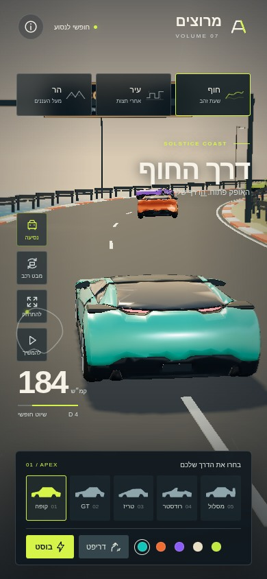
coast · apex · drive · קרוב390×844 · LOD 0 · 136,372 triangles · 122 calls
24 צילומים · 2026-11-04T20:45:44.404Z · 0 שגיאות קונסול · 0 בקשות חיצוניות
# סבב 04 — פרטי רכב ו-Offline 24 צילומים נשמרו. חמשת הדגמים נבדקו מקרוב בשתי המידות. קובץ HTML עצמי קטן מ-2.6MB עבר שש סצנות בדפדפן כשהרשת כבויה, עם אפס בקשות HTTP ואפס שגיאות. נבדקה בחירת כל חמשת הרכבים גם בגרסה העצמית. השיפור: חישוקים מקוריים נקיים, גוון מתכת שונה לכל דגם, GT ארוך יותר, טריז נמוך יותר, רודסטר פתוח וכנף מסלול. מפת הנורמל הוקטנה ל-512 בלי לפגוע בקריאת הכביש. 465 בדיקות נכסים עברו; מאמת Khronos מצא אפס שגיאות בכל 20 ה-GLB ואזהרה אחת במבנה ההורות של דמות הקהל. | סעיף | ממצא | החלטה | |---|---|---| | משקל | דגמי רכב מפורטים כ-71–85KB | עובר, לשמר תקציב גם לאחר גימור | | מרכב | עוד פאות/היילייטים קשים סביב הדלתות והזכוכית | להשוות עיבוד ישיר מהמקור המפורט, ולהימנע מהפחתה חוזרת של מקור שכבר הופחת | | אפקטים | עשן וניצוצות נראים, אך עשן קרוב מדי לצדדים/חלון אחורי | לשפר נקודת פליטה, פיזור וקריאות בצילום רצף | | LOD | שלוש רמות בכל קובצי הרכב; צריך להראות מעבר בכל החמישה | לצלם רמות מרחק נוספות ולבדוק צירים בגאומטריה מפוענחת | | ביצועים | SwiftShader על שרת הבדיקה מציג כ-2.5–3.5fps בסצנות הרציפות | זו תוצאת תוכנה, אינה טלפון. עדיין נדרשת הקלה משמעותית ומצב חסכוני עקבי | | איכות חסכונית | הבדיקה גילתה שה-API לא כיבה צללים כמו כפתור הממשק | לאחד נתיב הגדרת איכות, לצמצם מעברים/צללים/יריבים רחוקים | | מופעים | batch יחיד לכל האזור מונע סינון מופעים רחוקים | לחלק תפאורה למקטעים מרחביים, ולבדוק חיסכון אמיתי ברינדור | החלטה: ממשיכים לסבב 05; אין טענת 30fps על טלפון שלא נבדק. תוצאות התוכנה נשמרות כפי שנמדדו ב-verification/performance-round04.json.

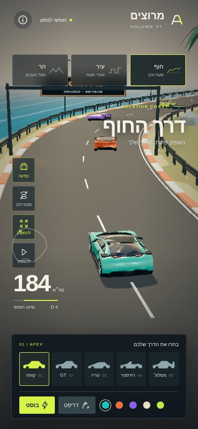
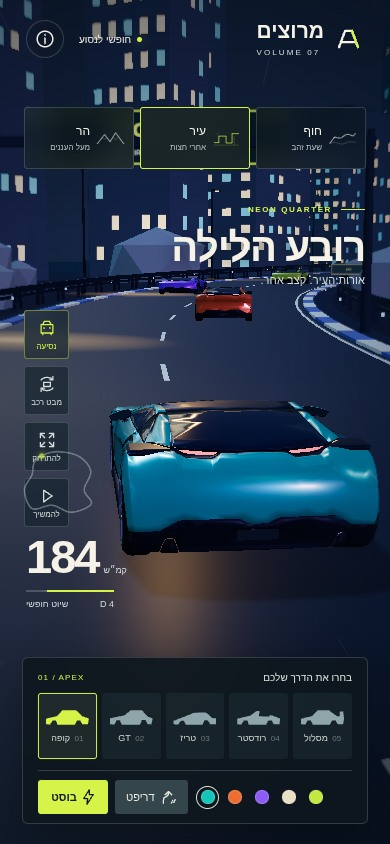
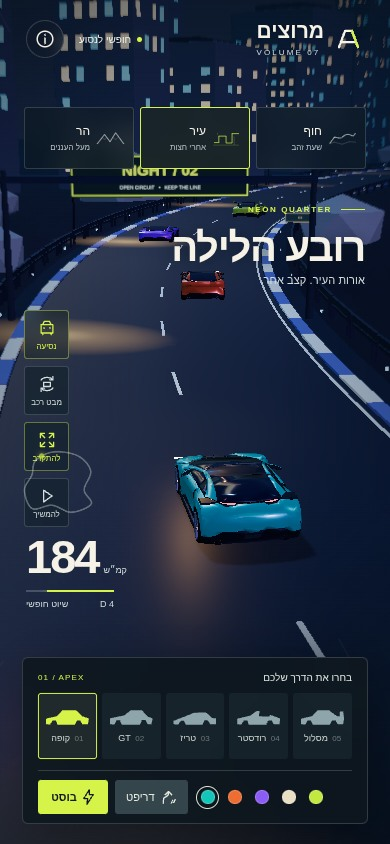
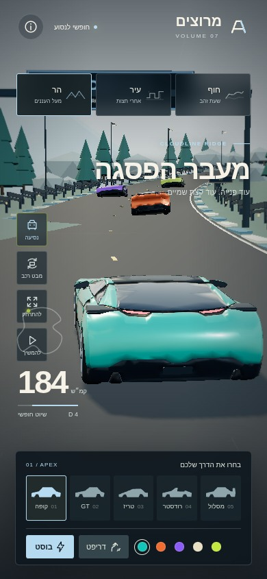
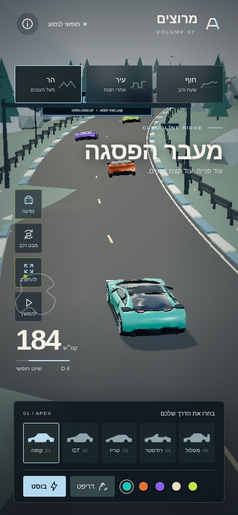
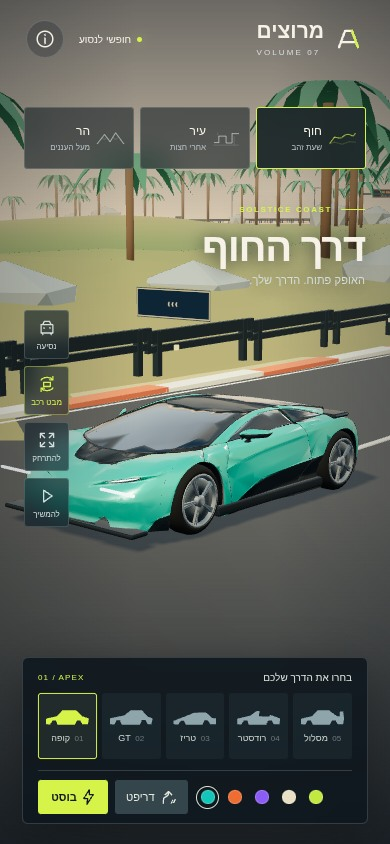
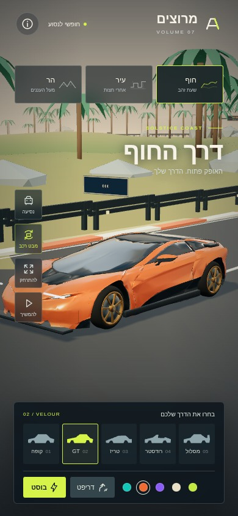
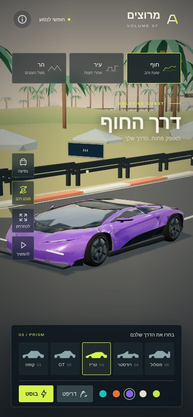
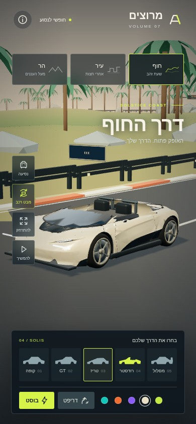
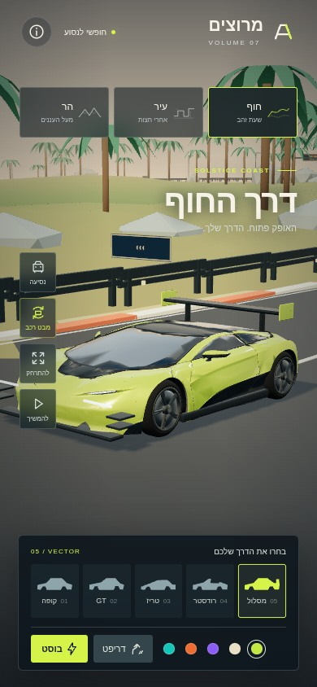
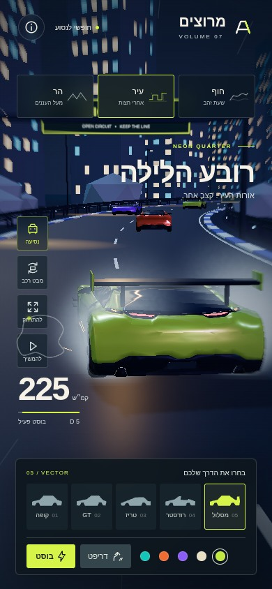
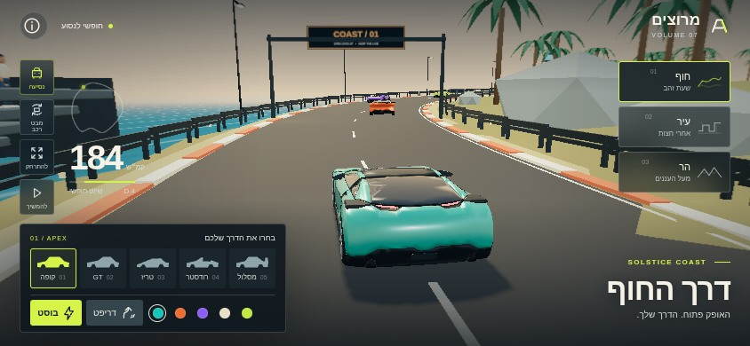
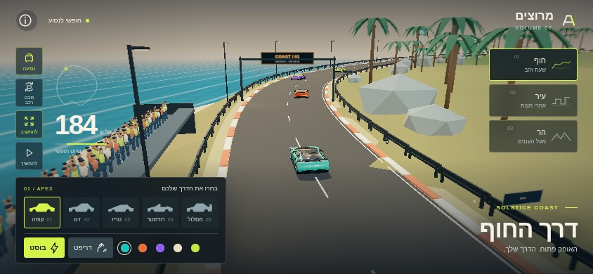
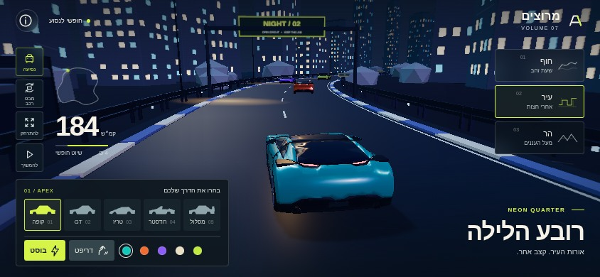
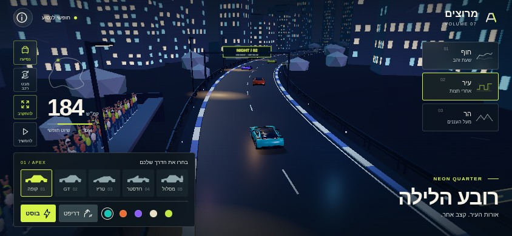
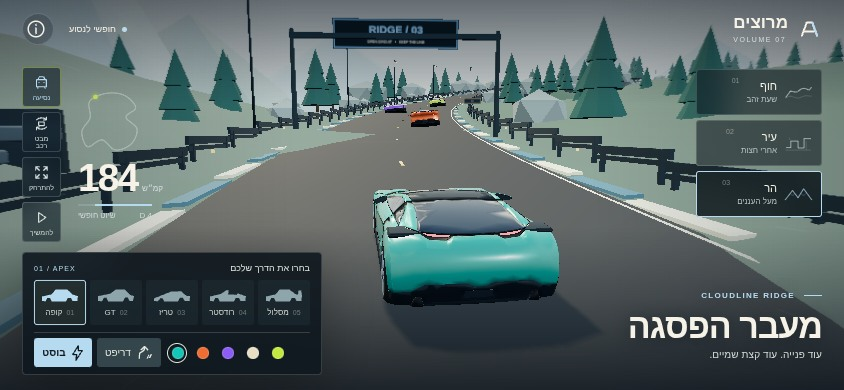
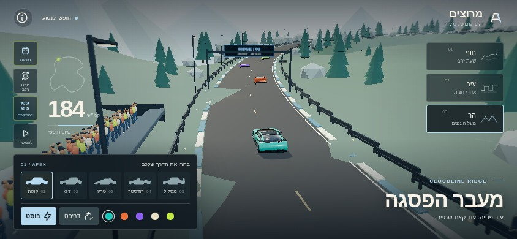
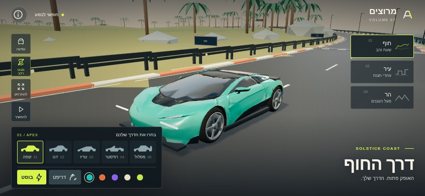
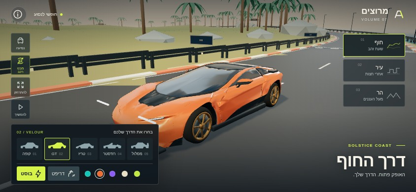
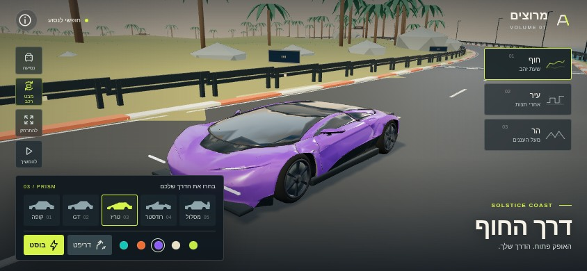
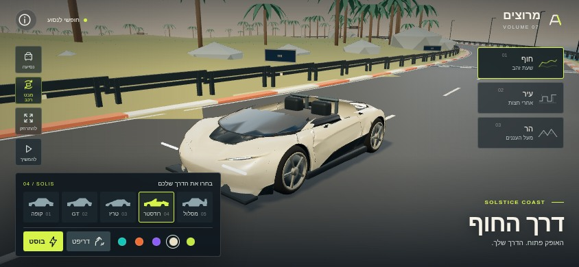
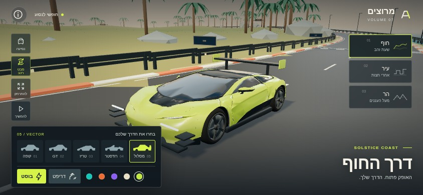
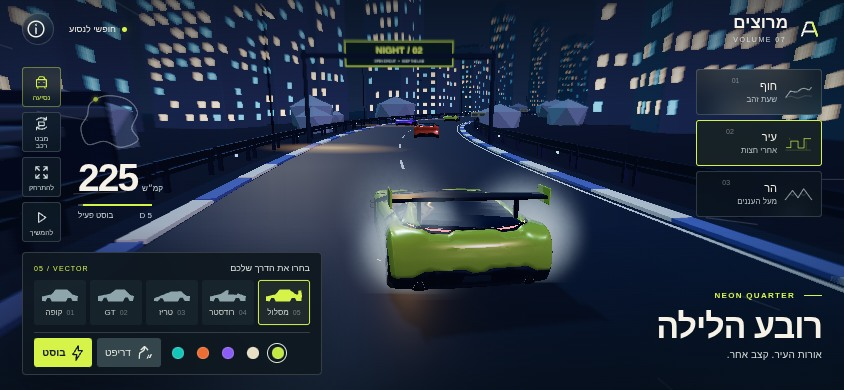